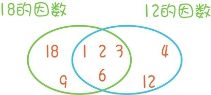

凡是跟随到这里的读者，都已经和我们一起经历了从自然数，到分数，再到有理数，最后再到实数的数系扩充历程，对算术的本质也有了深入的理解。但是，即使重新回到起点，回到看似最简单的自然数1，2，3，…中去，仍然会碰到大量崭新的概念和困难的问题。
首先是与乘法相关的两个概念，因数和倍数。一个正整数如果能写成两个正整数的乘积，那么这两个相乘的数就称为是原先这个正整数的因数，例如，18=18×1=9×2=6×3，因此1，2，3，6，9，18都是18的因数。一个正整数的倍数是指它与某个正整数的乘积，例如6×1=6，6×2=12，6×3=18，6×4=24，6×5=30，…都是6的倍数，被6除是没有余数的，也称被6整除。例如5，10，15，20都是5的倍数，都能被5整除。我们将2的倍数称为偶数，不是偶数的整数称为奇数，例如1，3，5，7，…都是奇数。因数和倍数是两个相互依存的概念，比如8×9=72，所以8和9都是72的因数，而72是8和9的倍数。
由倍数概念还可以引出公倍数和最小公倍数的概念。假如一个邮递员每6天送一次报纸到你家，每9天送一次杂志到你家，而今天邮递员恰巧同时送来了报纸和杂志，那么请问下一次邮递员同时送来报纸和杂志是在几天之后呢？
接下来邮递员送报纸的时间分别是（6的倍数）
6天后，12天后，18天后，24天后，30天后，36天后……
而接下来邮递员送杂志的时间分别是（9的倍数）
9天后，18天后，27天后，36天后，45天后，54天后……
比较之后，我们发现接下来邮递员同时送报纸和杂志的时间就是
18天后，36天后，54天后……
把这些既是6的倍数，又是9的倍数的数称为6和9的公倍数，而公倍数中最小的那个数18称为6和9的最小公倍数。上面这个问题其实就是求6和9的最小公倍数。再比如，10与15的公倍数是30，60，90…最小公倍数是30。
同样地，由因数概念还可以引出公因数和最大公因数的概念。例如，18的所有因数是1，2，3，6，9，18，而12的所有因数是1，2，3，4，6，12，其中既是18的因数，又是12的因数的数称为12和18的公因数。所以12和18的所有公因数是1，2，3，6，而其中最大的那个数6称为12和18的最大公因数。

从因数的概念还可以引申出一个非常核心的概念——素数。任何大于1的正整数都至少有两个因数，1和它本身，例如1和6都是6的因数。如果一个大于1的正整数，只有两个因数——1和它本身，此外没有其他因数，我们就称它是素数。
根据这个定义，1不是素数，而2，3，5，7，11，13，17，19，23，29和31都是素数。素数的特征是它不能分解为两个更小的正整数的乘积，所以4，6，8，15，21和24都不是素数，因为
4=2×2；6=2×3；8=2×4；15=3×5；21=3×7；24=8×3。
注意了，虽然这些数不是素数，但它们都可以一直分解下去，直到最后分解为素数的乘积，比如
24=8×3=4×2×3=2×2×2×3。
所以素数像是自然数世界的原子，所有大于1的自然数要么是素数，要么可以分解成素数的乘积，而素数本身不能继续分解为两个更小的自然数的乘积。关于素数有个非常自然的问题：
问题27：是不是有无限多个素数？
我们都知道有无限多个自然数，不管自然数写到多大，加上1又会产生更大的数。但这根本不足以说明素数也有无限多个，因为素数是非常特殊的自然数。如何说明有无限多个素数呢？最直接的方法就是不停地，疯狂地寻找更多的素数
2，3，5，7，11，13，17，19，23，29，31，37，41，43，47，53，59，61，67，71，73，79，83，89，97，101，103，107，109，113，…
当你找到许多个素数的时候，你可能会跑到我面前说：“看！我不断地找下去，总能发现新的素数，所以，肯定有无限个素数。”
这个理由可以说服很多人相信确实有无限多个素数，因为许多人会把很多，非常多，非常非常非常多，等同于是无限。例如人们常常说：
“我看到天上有无数颗星星！”
但是有限和无限是有本质不同的，有限的事物，无论数量多庞大，还是有限的。不管我们用肉眼，还是用最先进的天文望远镜，观测到的星星永远都只有有限个。同样的道理，无论花多长时间，无论寻找到了多少素数，所找到的素数永远都是有限个，谁敢保证我们能持续不断地找到新的素数。
所以，如果要绝对严格地证明素数有无限多个，需要采取一种全新的论证方式。
首先，假设素数的个数是有限的！
那就可以把所有的素数按照从小到大的顺序完全写下来，一个不漏
2，3，5，7，11，13，17，…
这有限个素数可能非常非常多，完全写下来可能会花很长很长的时间，但是，只要是有限的，就能在有限的时间内写完。接下来我们让这有限个素数全部相乘，再把这个乘积加上1（为什么要加上1呢？这恰恰是整个证明过程中最精妙的地方，读者看到后面将会恍然大悟），就会得到一个很大的正整数
(2×3×5×7×11×13×17×…)+1。
前面讲过，这样的正整数要么是素数，要么可以分解为素数的乘积。总之(2×3×5×7×11×13×17×…)+1一定是某个素数p的倍数。但是，在(2×3×5×7×11×13×17×…)中已经出现了所有素数，p自然也在其中出现，所以（2×3×5×7×11×13×17×…）也是p的倍数。
既然(2×3×5×7×11×13×17×…)+1和(2×3×5×7×11×13×17×…)都是p的倍数，那么1作为它们的差自然也是素数p的倍数，但是1不可能是某个素数的倍数，这就导致矛盾，所以最初的假设是错误的，素数有无限多个。
这种证明方法称为反证法，假设所要证明的结论是错误的，然后在这个假设的基础上推导出矛盾。推导出矛盾说明之前肯定有一个环节出错，如果整个推导过程都没问题，那就说明原先的假设是错的！
关于素数还有许多未解之谜。间隔为2的两个素数称为孪生素数，例如5和7，11和13，还有29和31都是孪生素数。虽然在计算机的帮助下，人类已经找到了许许多多的孪生素数，但到现在为止数学家还不知道是否存在无限多对孪生素数。
4=2+2，6=3+3，8=5+3，10=3+7，12=5+7，14=11+3，…这些等式似乎表明每个大于2的偶数都可以写成两个素数的和，但到目前为止数学家也不知道这个结论是不是对的。
问题28：你能否找到关于素数的更多规律？
提问时间
1.13.1 计算6和8，10和15，10和12，20和24这4对数的最大公因数和最小公倍数，将每对数的最大公因数和最小公倍数相乘后你会发现什么规律？
1.13.2 被2整除的正整数有什么特征，被5整除的正整数有什么特征？为什么会有这些特征？
1.13.3 观察3的倍数，并注意它们的数字和，例如15的数字和就是1+5=6，45的数字和就是4+5=9，102的数字和就是1+0+2=3。能否发现它们的特征，能否解释为什么会有这种特征？